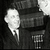

Fianna Fail
DeValera once more entered Dail Eirann, but on this occasion it seems he had matured as politician. It seemed impossible for deValera to continue his goal for a united republic under the political stance of Sinn Fein. On the 11th of August 1927 Eamon deValera, with the followers of his new party took the oath of allegiance.
DeValera came under enormous criticism because of this. It seemed like the civil war was a futile effort after the Fianna Fail TDs took this oath. This was surely going to be another smear on deValera’s career, one more subject that he could be criticised on.